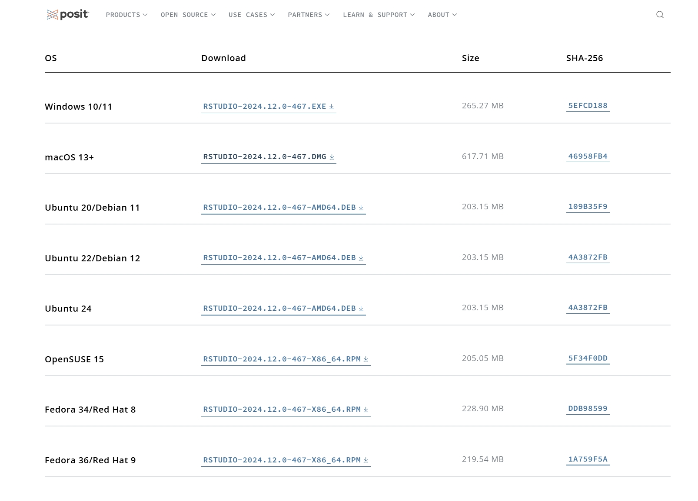
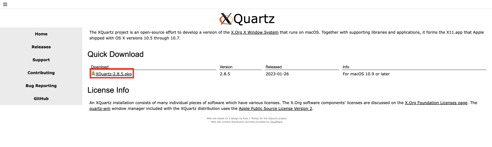

Tutorials for Tidymass Shinyapp
1 Installation and access instructions
Tidymass shinyapp is a user-friendly web application for Tidymass that requires little or no programming experience.
We provided online version so that you can simply access it and analyze your data. If you want to process the data locally, we also provide various download options. To be specific, the app can be installed via code, docker and server, and we will introduce how to do that step by step in this chapter.
1.1 Access the online version
To access the online version of Tidymass shinyapp, you can simply click the link: https://tidymassshiny.jaspershenlab.com
This online version is hosted on a server, and you can use it to analyze your data without any installation. However, please note that the online version may have some limitations in terms of data size and processing speed. For example, the upload file size is restricted to 512MB.
Different from the local version, the results of online version will be stored in the server and will be deleted after 24 hours. If you want to save the results, please record the JOB ID and download the results by clicking “Download All Data”.
1.2 Install R and Rstudio
You may choose to use the local version of Tidymass shinyapp, which requires you to install R and Rstudio on your computer. This allows you to analyze larger datasets and have more control over the analysis process.
If you have installed them before, please ensure that R version > 4.1 as tidymass required, ohterwise download and install the latest version of R.
Install R
Download R and install it.

Install Rstudio
Download Rstudio and install it.

Open the Rstudio

1.3 (For Mac User) Install Cario
Cairo is a 2D graphics library used by R for high-quality plots and needed for Tidymass Shinyapp. On macOS, it requires the X11 system, which is not installed by default. You can follow the following steps if you haven’t install Cairo.
First, visit the official website of XQuartz and install it, and this will restart your computer.

Next, you can install Cairo by running the code in Rstudio:
If the installation is successful, you should be able to library it:
1.4 Install Tidymass shinyapp
First, you are recommended to install Tidymass with the following code. For more information and guidance, please refer to Tidymass Website
Second, install the necessary packages:
if (!require('remotes')) install.packages('remotes');
if (!require('tidyverse')) install.packages('tidyverse');
if (!require('writexl')) install.packages("writexl");
if (!require('hexbin')) install.packages('hexbin')
if (!require('ComplexUpset'))install.packages('ComplexUpset');
if (!require('shinyalert'))install.packages('shinyalert');
if (!require('shinyFiles')) remotes::install_github('thomasp85/shinyFiles');
if (!require('shinyWidgets')) remotes::install_github("dreamRs/shinyWidgets");
if (!require('shiny')) install.packages('shiny');
if (!require('bsicons')) install.packages('bsicons');
if (!require('bslib')) install.packages('bslib');
if (!require('plotly')) install.packages('plotly');
if (!require('colourpicker')) install.packages('colourpicker');
if (!require('massdbbuildin')) remotes::install_github('tidymass/massdbbuildin')
if (!require('massdatabase')) remotes::install_gitlab("jaspershen/massdatabase")Finally, install Tidymass shinyapp with the code:
To start the Tidymass shinyapp:
You should be able to see:
1.5 Install docker version
Docker, a group of platform as a service (PaaS) products, uses OS-level virtualization to provide software in containers. It’s useful for individuals who want to share the code, data, and analysis environment with others to repeat their analysis and results.
We provide a docker version of tidymass shinyapp, all the packages in tidymass shinyapp and the dependent packages have been installed.
Install docker
You can refer the the official website to download the docker. Then run docker.
Pull the tidymassshiny image
Open your terminal (on Windows, use Command Prompt, PowerShell, or Windows Terminal) and type the following command:
Get the path of the demo data
Since the Shiny app utilizes shinyFiles to obtain file or folder paths, you need to mount your working directory into the Docker image when running the Docker version of tidymassshiny. Here are instructions.
For macOS systems, you can get the path for the demo data from Get Info, the path may look like /Users/yijiang/Desktop/Demo_data. For Windows OS, the path may look like C:\Users\Yijiang\Documents. Here you need to copy Your Own Path.
Ensure Docker Desktop has permission to demo data
Ensure Docker Desktop has permission to access the drive containing your working directory:
- Open Docker Desktop.
- Go to Settings > Resources > File Sharing.
- Add the drive or folder (e.g.,
/Users/yijiang/Desktop/Demo_data) to the shared folders list. - Click Apply & Restart.

Please make sure the demo file has the required permissions before proceeding to the next steps. Here are some guidance for Mac and Windows.
Here replace /Users/yijiang/Desktop/Demo_data with your own path that you just give permission to the Docker Desktop. Then run the code:
This command achieves two purposes:
- Starts the Docker image.
- Mounts your working directory to the /home path within the container.
Running the Application
In terminal, a series of R package loading information will be printed. Until you see the prompt below, tidymassshiny has been successfully running：
R version 4.3.3 (2024-02-29) -- "Angel Food Cake"
...
...
...
## Until this message show up.
Listening on http://0.0.0.0:3838Then open the browser (Google，Firefox，Edge or Safari), paste the address http://localhost:3838 in the address bar, and the web page can jump to the tidymass shinyapp page.
Enjoy your metabolomic data analysis process!


1.6 Install server version
To better handle large-scale metabolite data analysis, tidymass_shiny can be deployed on high-performance servers.
This guide walks you through deploying tidymass_shiny on Ubuntu 20.04 LTS server
Step 1: Install Required System Libraries
Ensure the system has the necessary libraries for R package compilation and Shiny functionality. These libraries are critical for graphics, networking, and data processing.
-Update package lists:
-Install the libraries:
sudo apt install -y gfortran libcurl4-openssl-dev libssh2-1-dev libgit2-dev libpng-dev libjpeg-dev libtiff-dev libcairo2-dev libharfbuzz-dev libfribidi-dev zlib1g-dev libbz2-dev liblzma-dev libnetcdf-dev libxml2-dev libjson-c-dev libssl-dev libfontconfig1-dev libfreetype6-dev libicu-dev libhdf5-devStep 2: Create a Shiny User Account
To isolate the Shiny application and manage permissions effectively, create a dedicated user.
-Create the shiny user:
-Switch to the shiny user:
Step 3: Install R
Install the latest version of R from the CRAN repository.
-Add the CRAN repository:
sudo apt-key adv --keyserver keyserver.ubuntu.com --recv-keys E298A3A825C0D65DFD57CBB651716619E084DAB9
sudo add-apt-repository 'deb https://cloud.r-project.org/bin/linux/ubuntu focal-cran40/'-Update and install R:
Step 4: Install Shiny Server
Shiny Server hosts and serves your Shiny application.
-Install gdebi to handle .deb files:
-Download and install Shiny Server (verify the latest version at Shiny Server’s official site):
wget https://download3.rstudio.org/ubuntu-18.04/x86_64/shiny-server-1.5.17.973-amd64.deb
sudo gdebi shiny-server-1.5.17.973-amd64.deb-Start and enable Shiny Server:
Step 5: Set Up the Shiny Application Directory
Create a directory to store your Shiny application.
-Create the directory :
-Set ownership to the shiny user:
Step 6: Install Required R Packages
Install the R packages needed for your Shiny application.
-Start R:
For Chinese users:
-Set package mirrors (optional, for faster downloads):
options(repos = c(CRAN = 'https://mirrors.tuna.tsinghua.edu.cn/CRAN/'))
options(BioC_mirror = 'https://mirrors.westlake.edu.cn/bioconductor')-Install essential packages
install.packages(c('tidyverse', 'writexl', 'hexbin', 'ComplexUpset', 'shinyalert', 'shiny', 'bsicons', 'bslib', 'plotly', 'colourpicker','BiocManager'，'devtools')
BiocManager::install(c('preprocessCore','impute','mzR','MSnbase','Rdisop','BiocGenerics','KEGGREST','DelayedArray','S4Arrays','GenomicRanges','multtest','MassSpecWavelet','xcms','Biobase','AnnotationFilter'))
devtools::install_gitlab('tidymass/masstools') devtools::install_gitlab('tidymass/massqc') devtools::install_gitlab('tidymass/massdataset') devtools::install_gitlab('tidymass/metid') devtools::install_gitlab('tidymass/metpath') devtools::install_gitlab('tidymass/massstat') devtools::install_gitlab('tidymass/massprocesser') devtools::install_gitlab('tidymass/massdatabase') devtools::install_gitlab('tidymass/tidymass') devtools::install_github('thomasp85/shinyFiles') devtools::install_github('dreamRs/shinyWidgets') devtools::install_github('tidymass/massdbbuildin') devtools::install_github('tidymass/tidymass_shiny')Step 7: Deploy the Shiny Application
Add your Shiny app code to the directory.
-Create app.R:
-Add your app code (example):
-Save and exit (Ctrl + O, Enter, Ctrl + X in nano).
Step 8: Restart Shiny Server and Test
Restart the server and verify your application works.
-Restart Shiny Server:
-Test the app:
Open a browser and go to http://your-server-ip:3838/tidymass_shiny.

Notice
It is important to note that tidymass_shiny utilizes the shinyFiles package, which is inherently a local file management system. Theoretically, shinyFiles cannot directly access local files. You need to set the raw data directory and raw data under “/home/shiny”.